The transport equations in are currently defined as follows:
| symbol | quantity | units |
| 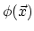 | porosity | [] |
| 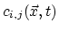 | concentration fraction | [] |
| 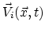 | Darcy velocity vector | [ |
| 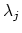 | degradation rate | [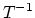] |
| 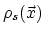 | density of the solid mass | [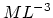]] |
| 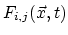 | mass concentration | [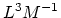] |
| 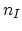 | number of injection wells | [] |
| 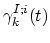 | injection rate | [] |
| 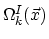 | injection well region | [] |
| 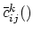 | injected concentration fraction | [] |
| 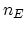 | number of extraction wells | [] |
| 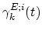 | extraction rate | [] |
| 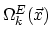 | extraction well region | [] |